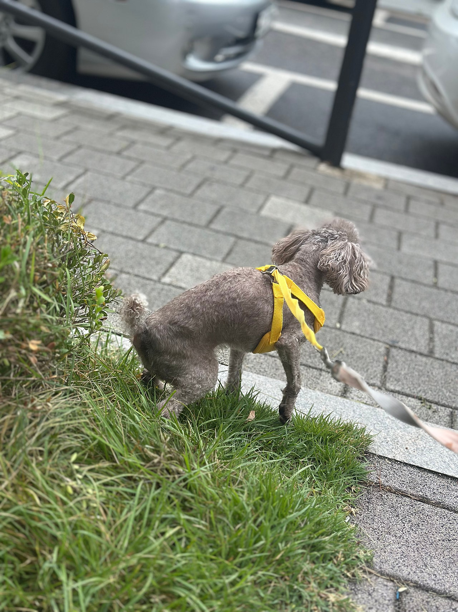
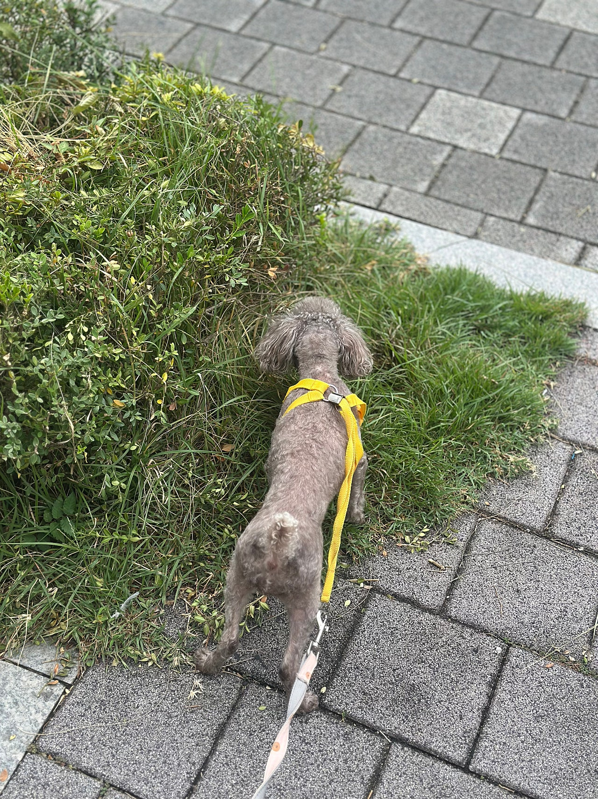
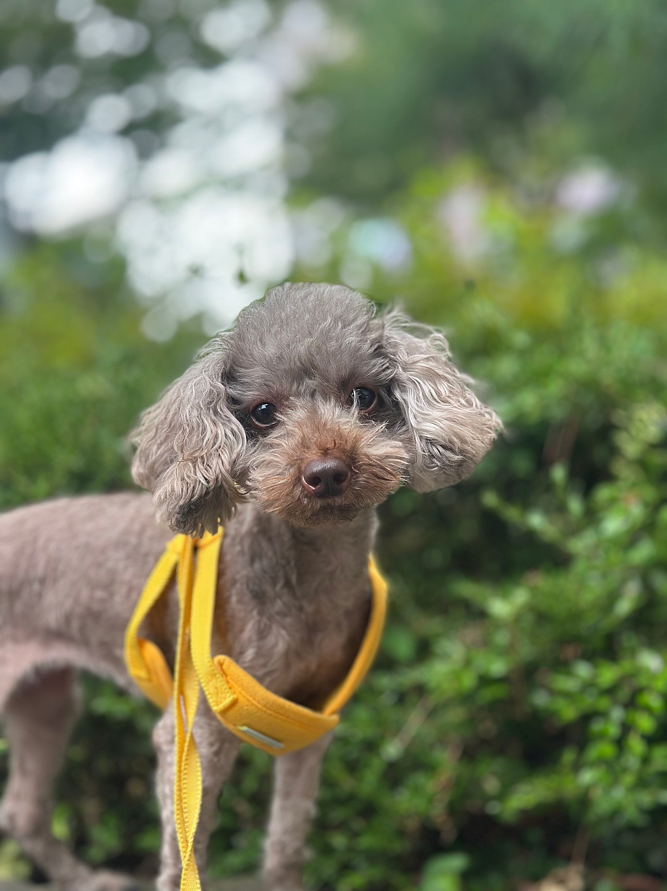
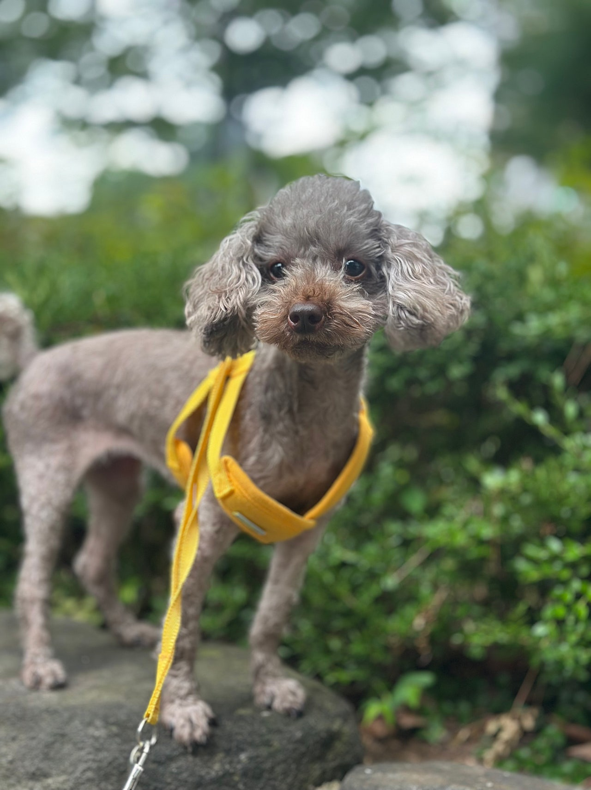
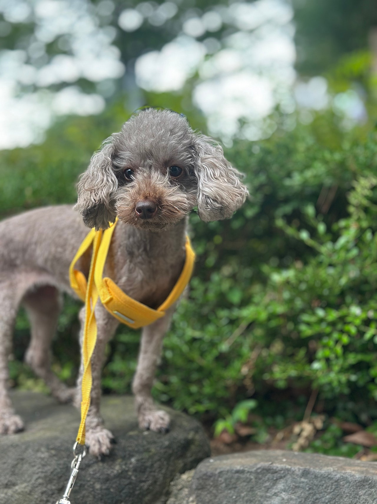
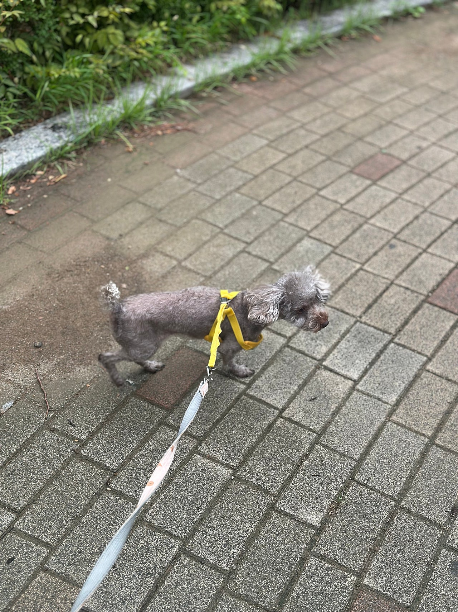

실버베이지 토이푸들 초코의 행복한 산책일기
언제나 사랑스러운 아이들과함께하는 아가펫스토리입니다!!!


체구는 작지만 산책 매너만큼은아주 훌륭한 꼬마숙녀랍니다텐션이 올라서 신나게 걷다가도바로 곁에서 발을 맞춰서 걸을줄 아는기특한 아이에용걷다가 흙이나 풀을 발견하면 바로야무지게 코를 박고 노즈워크 삼매경에빠져버리는 울 초코!!!!


밖에서 신나게 에너지를 쏟고 오면품에 폭 안겨서 딥슬립에빠져바리는 순댕이랍니다그러다가도 제가 부르면똥그란 눈을 더 똥그랗게 뜨고 쳐다보는데그럴때마자 진짜바로 사랑에 빠져버린답니다


귀여운 울 초코,,,,두살때 대퇴골 수술로 인해서격한 운동은 무리지만이렇게 조금씩 산책은 오히려 너무너무 도움된답니다 ㅎㅎ0505-464-1004
댓글 20
품에 안기는 초코랑 밖에서 신나는 초코가 한 아이로 보여요.
꼭 좋은 데로 가세요.
밖에서 에너지 쏟고 품에 안겨 잔다는 순둥이가 눈에 보여요.
아프지 말고 잘 자라라.
노즈워크 삼매경에 빠지는 초코, 산책 일기다운 컷이에요.
초코, 아프지 말고 잘 자라.
부르면 눈을 더 크게 뜬다는 대목에서 웃음이 났어요.
초코, 좋은 사람만 만나자.
야무지게 코 박는 장면이 이 글의 핵심인 것 같아요.
기다리는 시간이 짧았으면 좋겠어요.
딥슬립에 빠지는 순댕이라는 표현이 사진이랑 잘 붙어요.
외롭지 않게, 좋은 손에서 자라길.
좋은 가족이 이 매너를 알아봐 주면 초코한테 잘 맞을 것 같아요.
초코, 좋은 가족 만나.
두 살 때 대퇴골 수술을 해서 격한 운동은 무리라는 안내, 꼭 기억해야겠어요.
초코, 수술 이력 있는 아이라는 걸 알고 보니 천천히 걷는 게 더 기특해요.
초코 일기, 사진마다 산책하는 이유가 있어요.
그래도 조금씩 하는 산책이 도움이 된다니 이 사진들이 더 소중해요.
체구는 작은데 산책 매너가 훌륭하다는 말이 사진이랑 같아요.
꼬마숙녀 초코, 신나게 걷다가도 곁에서 발을 맞추는 장면이 기특해요.